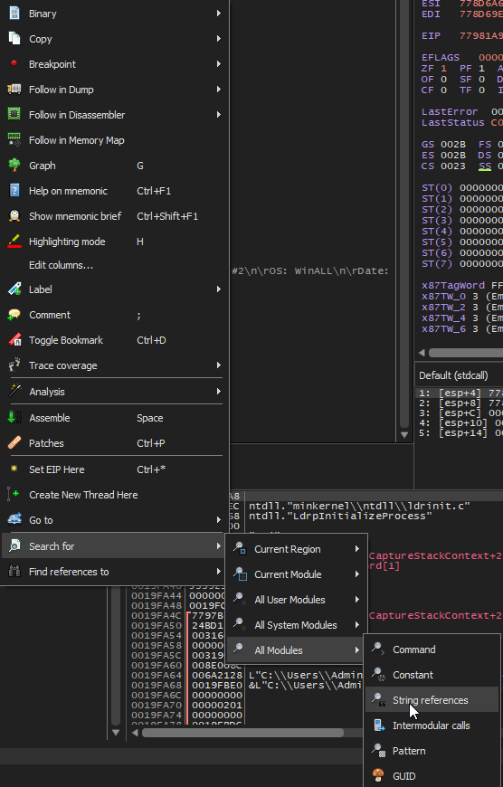
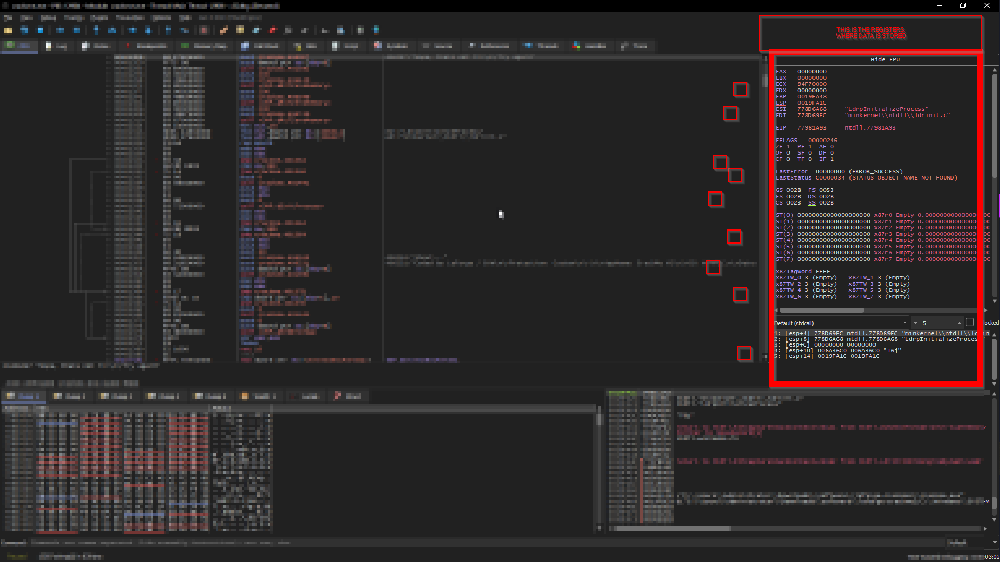

Throw a program that can give a message like "incorrect username/passsword"
SEARCH FOR STRING REFERENCES, typically when they give an error message after giving wrong password.

REGISTRAR = GLOBAL
